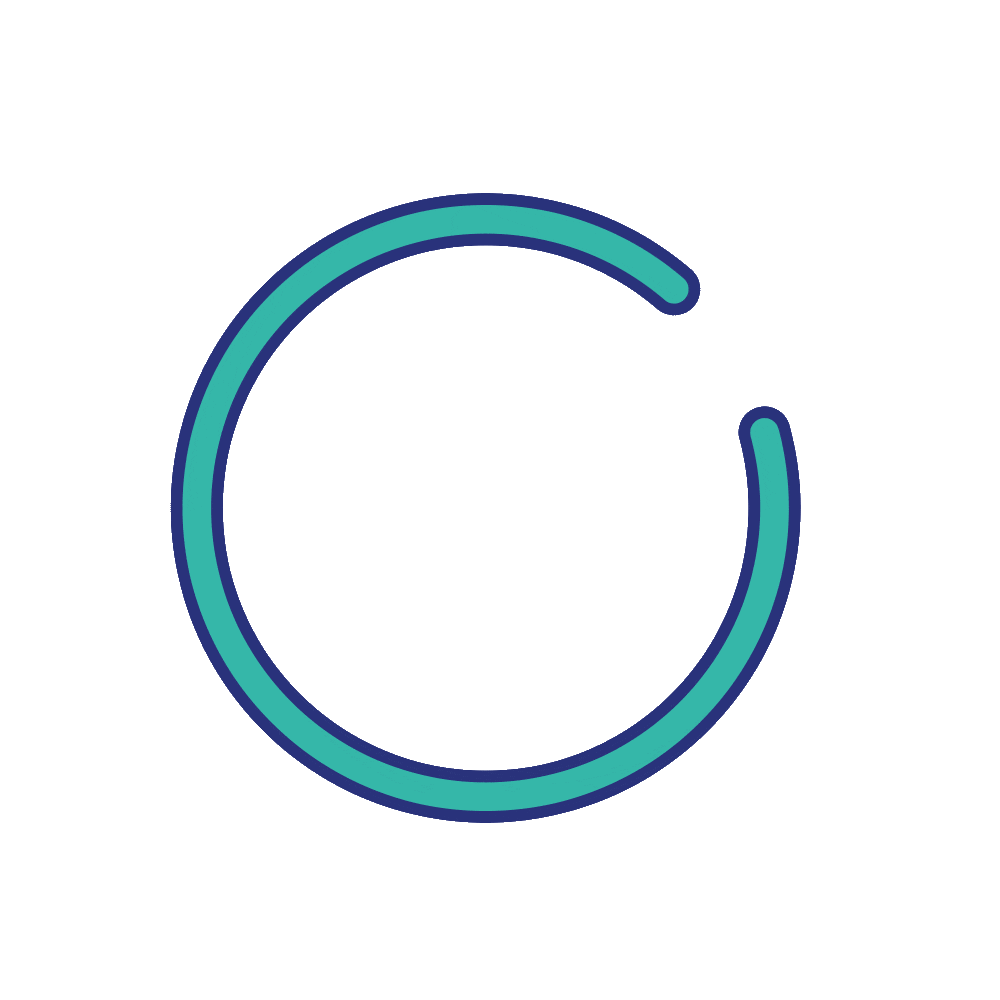

- 
- 
Sobre
Olá, tudo bem? Meu nome é Jonathan!
Estou graduando Engenharia de Software na Faculdade IESB e estou em processo de transição de carreira para a área de desenvolvimento Front-end.
Sou empresário, dono de uma empresa de locação de veículos, há aproximadamente 2 anos e meio. Onde sou responsável por administrar e alugar esses veículos. Sou uma pessoa extremamente organizada e metódica, tenho um bom relacionamento interpessoal, estou sempre em busca de uma oportunidade para desenvolver e melhorar meus conhecimentos continuamente, assim como estou disposto a trabalhar em equipe e compartilhar experiências com outras pessoas.
Possuo alguns projetos desenvolvidos durante os estudos, pelo curso Explorer da Rocketseat e também alguns projetos pessoais, disponíveis no GitHub: (https://github.com/desenvjonathan) com foco nas tecnologias:
HTML | CSS | JavaScript
E por fim, meu objetivo num futuro próximo, é me tornar desenvolvedor Front-End (talvez fullstack) Web e Mobile.